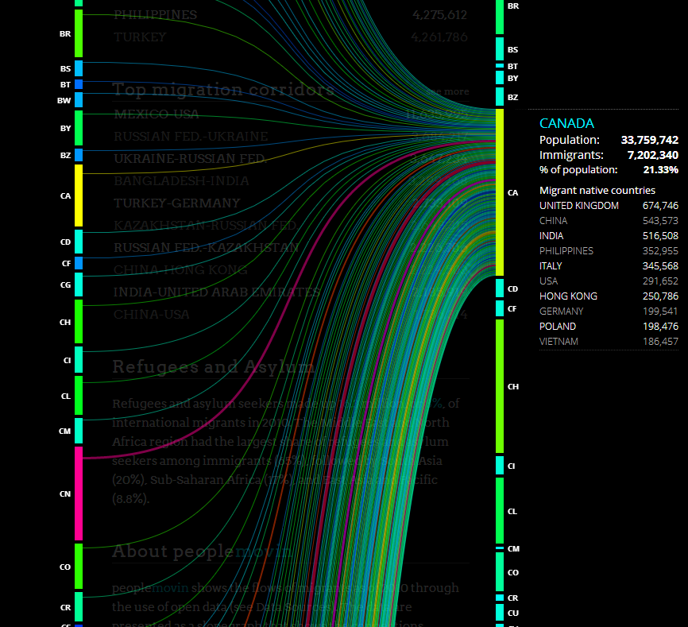
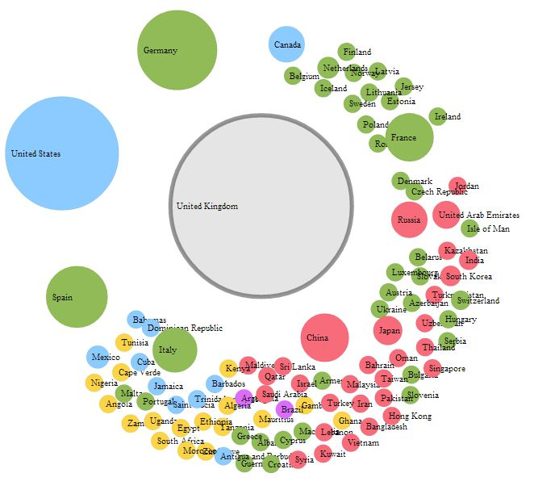
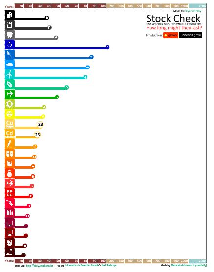
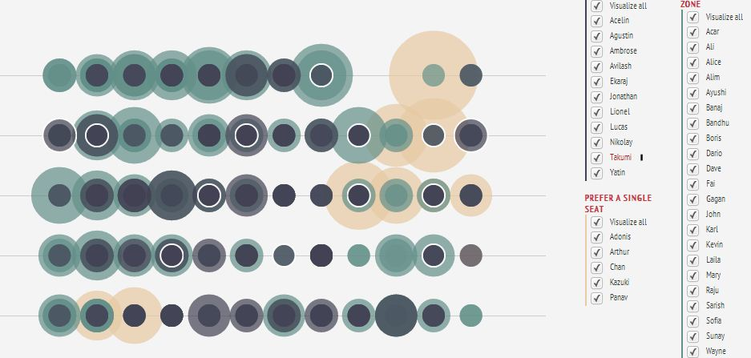
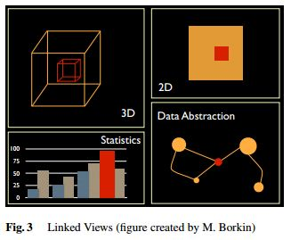
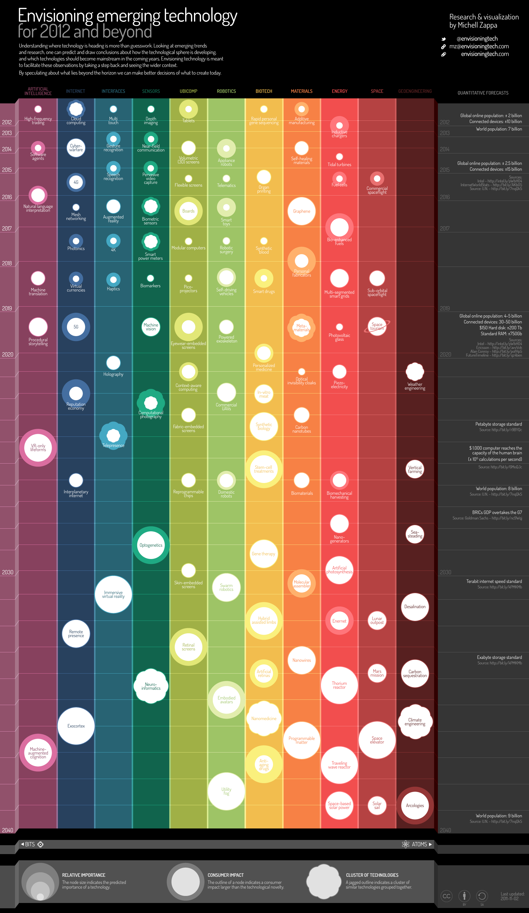

数��视化
Data visualization 是一件很有趣的事情。最近在å°�试处ç�†æ•°æ�®ï¼Œä¾¿é¡ºæ‰‹ç¿»äº†ç¿» visualization 的进展，然å��除了 IBM 大å��é¼�é¼�çš„çš„ many-eyes ，还有一个比较好有æ„�æ€�的网站是 visualizing.org。 Visualizing.org è·Ÿ many-eyes 很åƒ�，是一个社区形å¼�的网站，用户å�¯ä»¥æ³¨å†Œç„¶å��ä¸Šä¼ ï¼Œè€Œä¸”ç½‘ç«™è¿˜æœ‰ç§¯ç´¯ä¸‹æ�¥çš„很多数æ�®ä¾›ç”¨æˆ·ä½¿ç”¨ã€‚
当然我ä¸�是为了介ç»�这个网站æ‰�写这篇 post 的，写 post 是一个记笔记的过程，如æ�œæˆ‘ä¸�能ä»�ä¸å¦åˆ°ä»€ä¹ˆï¼Œå°±æœ‰ç‚¹æµªè´¹æ—¶é—´äº†ã€‚下é�¢è¿›å…¥æ£é¢˜ï¼Œæˆ‘å°�试总结一下 visualization çš„æ—¶å€™çš„å‡ ä¸ªå�¯ç”¨çš„ç»�验。
应该使用何�形��表�数�
ä»� visualizing.org 的分类ä¸æ��å�–出æ�¥çš„有用的形å¼�包括（ä¸�过说å®�è¯�è¿™æ ·åˆ†ç±»å¹¶ä¸�是很好用）
- Chart
- Time series
- Map
- Flow
- Matrix
- Network
- Hierarchy
- Info-graphic
è¦�å�¯è§†åŒ–çš„æ•°æ�®å�¯ä»¥åˆ†å‡ 类（我想的ä¸�å…¨é�¢ï¼Œæ¬¢è¿�补充，共å�Œå¦ä¹ ）
- 有一系列对象，他们之间相互有关è�”。写æˆ� \(\bf \mathrm A \leftrightarrow \mathrm B\) 粗体的拉ä¸�å—æ¯�表示一系列对象，比如一系列地点。
è¿™ç§�æƒ…å†µä¸‹å› ä¸ºè¦�展示数æ�®ä¹‹é—´ç›¸äº’关系，所以å®�质上是一个 network 图，ä¸�过通过一些技巧å�¯ä»¥æŠŠç®€å�•çš„ network 图å�˜æˆ�更好的形å¼�。
方�一：使用转�� flow 图。通过把对象列出两��是的�本应该是一个比较��难以看清的 network ��了清晰易查找的 flow。
这类图ä¸æˆ‘喜欢的一个是 people moving çš„ flow

这个 flow 图é��常好的展示了ä»�一个国家移民到å�¦ä¸€ä¸ªå›½å®¶ï¼Œä¸Šé�¢çš„截图就是人们移居（migrateï¼Œæ˜¯ç§»æ°‘ä¹ˆï¼Ÿï¼‰åˆ°åŠ æ‹¿å¤§çš„æƒ…å†µï¼Œå�¯ä»¥çœ‹åˆ°ä¸å›½ï¼ˆCHï¼‰ç§»æ°‘åˆ°åŠ æ‹¿å¤§çš„è¿˜æ˜¯æ¯”è¾ƒå¤šçš„ã€‚é€šè¿‡è¿™æ ·çš„ flow，我们å�¯ä»¥å¾ˆå®¹æ˜“很直观的分æ��æ•°æ�®ã€‚
æ–¹å¼�二：圈形的 network 图。为什么è¦�å�šå‡ºåœˆå½¢å‘¢ï¼Ÿå› 为圈形å�¯ä»¥ä½¿å¾—è¿�线集ä¸åœ¨åœˆå†…部，而且å�¯ä»¥å‡�å°‘æ•°æ�®äº¤å�‰ã€‚通过 interactive design，å�¯ä»¥ä½¿å¾—è¿�çº¿æ— äº¤å�‰ã€‚比如这个 Migrants moving money：
这个截图是ä¸å›½çš„侨款，也就是ä¸å›½ç§»æ°‘所寄å›�祖国ä¸å›½çš„钱数。å�¯ä»¥çœ‹æ�’除香港地区，ç¾�国是最大的æ�¥æº�。
事�上这�方法�第一�本质是相�的。
æ–¹å¼�三：network 图。通过点和è¿�线æ�¥å…³è�”。例å�比如Attractions of Councils: WEF GAC interlink survey
但是这个图å®�际上并ä¸�好。而且有时候，线æ�¡æ˜¯å�¯ä»¥å�»æ�‰çš„，比如这个国际航ç�çš„å�¯è§†åŒ–：
Click a nation to see all connected nations via flights. Click again to see arranged nations based on the distance.
Double-click the background to reset.
截图：

æ–¹å¼�四：使用 table。ä¸�过为了更直观，使用é�¢ç§¯ç‰æ–¹å¼�æ�¥ä»£è¡¨æ•°æ�®çš„大å°�。
比如 10 个人任�两个人之间相互按照对对方的好感程度打分，为了展示任�两个人 A 和 B 之间相互的好感程度，�以使用颜色柱�展示，选定一个作为两个人好感程度相�，颜色柱之上的颜色表示 A 对 B 的好感大� B 对 A 的好感，�之亦然。
这里有个 council 之间的例å�，截图如下：
- 层级数æ�®ï¼Œæ•°æ�®ä¹‹é—´å�¯ä»¥åˆ†æˆ�å‡ ä¸ªå±‚çº§å…³ç³»ã€‚
就是 Hierarchy 图，�过有时候�以���线。
比如这个 soft drink 的 hierarchy 图
ä»�è¿™å¼ æˆªå›¾ç«‹åˆ»å�¯ä»¥çœ‹åˆ° coca-cola å’Œ pepsi çš„åº�大，通过å�Ÿç½‘页å�¯ä»¥è‡ªç”±çš„放大缩å°�æ�¥æŸ¥çœ‹ä¸�å�Œçš„å…¬å�¸çš„产å“�。
è¿™æ ·çš„ hierarchy 图è¦�比å�•è°ƒçš„并列的整整é½�é½�的列举è¦�包å�«äº†æ›´å¤šçš„ä¿¡æ�¯ï¼Œå› 为圆圈的大å°�å�¯ä»¥è¡¨ç¤ºæ•°æ�®çš„一个维度，甚至还å�¯ä»¥å¼•å…¥é¢œè‰²ç‰ç‰æ�¥è¡¨ç¤ºæ›´å¤šçš„维度。
- 简�的两维数�，比如���象出�的频数。
方�一：使用 Histogram。这是比较�典的选择，�使用矩形或者线�的长度�表示数�的大�。例如这个关�能�的 visualization，截图如下：

æ–¹å¼�äºŒï¼šä½¿ç”¨æ ‘å›¾ï¼ˆTree map），使用é�¢ç§¯è¡¨ç¤ºæ•°æ�®çš„大å°�。这里有个 UN çš„ Global Pulse Visualization 的例å�：
æ–¹å¼�三：使用散点，使用散点的大å°�或者颜色ç‰å±�性æ�¥è¡¨ç¤ºæ•°æ�®çš„大å°�。
一个很优秀的例å�是å¦ç”Ÿå��座ä½�ä¹ æƒ¯çš„ä¾‹å�，截图：

事å®�上 tag page 也是å±�äº�这类，我们å�¯ä»¥é€šè¿‡æ¯�个 tag 的大å°�颜色ç‰ç‰æ�¥æ ‡ç¤ºæ•°æ�®çš„大å°�。
- å��æ ‡æ•°æ�®
除了å�¯ä»¥ä½¿ç”¨ä¸Šé�¢è¯´æ��到的方å¼�，对äº�å��æ ‡æ•°æ�®ï¼Œæœ‰ä¸ªç‰¹ç‚¹æ˜¯å�¯ä»¥ç»˜åˆ¶åœ°å›¾ï¼ˆMap），而 Map å�¯ä»¥ä¸�其他形å¼�结å�ˆï¼Œæ¯”如 flow。一个比较好的例å�是关äº�我们å��é£�æœºçš„ä¸€å¼ å›¾ï¼Œæˆªå›¾å¦‚ä¸‹ï¼š
图片上部的地图是é£�行的出å�‘åŸ�市，下部的地图是终点åŸ�市。更多内容å�¯ä»¥æŸ¥çœ‹UCSB的这个站点，其ä¸æ��供了 demo 软件。
�� visualization 的结�
å‰�些时候，一ä½�天文å¦å®¶ Goodman 写过一篇关äº�高维天文数æ�®å�¯è§†åŒ–的论文，其ä¸æ��到了 linked views 很é‡�è¦�，就是说我们è¦�多ç§�å�¯è§†åŒ–æ–¹å¼�è�”å�ˆèµ·æ�¥å±•ç¤ºæ•°æ�®ï¼Œæˆ‘截å�–论文ä¸ä¸€å¼ 图片æ�¥è¯´æ˜�。

ä¸�å�Œçš„ visualization 结å�ˆèµ·æ�¥å¯¹æ•°æ�®è¿›è¡Œå¤šè§’度的呈ç�°ï¼Œå�¯ä»¥ä½¿æˆ‘们对数æ�®æœ‰æ›´æ·±åˆ»çš„ç�†è§£ã€‚所以 data mining å®�际上是一个应用é��常广泛的专业，一个 data mining 专业的å¦ç”Ÿåœ¨ç�°åœ¨è¿™ç§�天文专业被大é‡�æ•°æ�®æ‰€è½°ç‚¸ï¼ˆæœ‰ç¯‡è®ºæ–‡ç”šè‡³è¯´æ˜¯ data tsunami）的时代真是个å®�è´�啊。
有一个ä¸�错的å�†å�²æ–¹é�¢çš„æ•°æ�®å�¯è§†åŒ–例å�，把时间线和地图集å�ˆèµ·æ�¥å±•ç¤ºçš„，这个方案å®�际是一ç§�深层次的 linked views：
Conflict History of the World
一些有用的工具
- http://en.wikipedia.org/wiki/Data_visualization
自然�先查看一下 wikipedia 啦啦啦~ - visualizing.org 有个列表：
- http://selection.datavisualization.ch/ 列举了很多有用的工具。
- https://github.com/blprnt/Kepler-Visualization This is a Processing sketch to visualize data from NASA’s Kepler mission.
- http://flowingmedia.com/timeflow.html Time Flow is an open-source timeline built to help journalists analyze temporal data. The application offers several view modes–timelime, calendar, list, table–to help explore thousands of data points.
- http://mapbox.com/
Mapbox is a tool for map making.
Data Visualization 的机�/组织/社区
有些�错的 data visualization，比如（图片�自 envisioningtech.com）

- IBM çš„ Many-eyes.com
这个一开始�到了，是个 visualization 的社区。
之��到过它的工具列表了。这个网站是
Datavisualization.ch is the premier news and knowledge resource for data visualization and infographics.
一个类似 data visualization 社区的网站。
æ�¥è‡ª GE 的例å�。
Web-based Analysis and Visualization Environment
本文所用的数æ�®æŒ‰ç…§ visualizing.org æ‰€æ ‡ç¤ºï¼Œä½¿ç”¨ CC BY-NC-SA å��议，除了æ˜�确指æ˜�的图片，其他图片皆出自 visualizing.org。
好了讲完了，�以用 exoplanets.org 的数����。

{kind=link}
{kind=link}
{kind=link}
{kind=link}
{kind=link}
{kind=link}
{kind=link}
{kind=link}
{kind=link}
{kind=link}
数��视化
谢谢�
�错
谢谢�
图片�常好看
谢谢�
楼主有这个主题的wp版本么，能�借用啊
这个�始版本是 lukoo（http://wordpress.org/extend/themes/lukoo），但是被我改的乱七八糟了。
线�挺�的
：）
精确�化的数��维和抽象简约的图形�维曲径通幽
好�丽的excel (☆_☆)
��主问好
我å�‘ç�°ä½ 们微å�šå†…容好全é�¢~
哇å¡�ï¼Œä½ ä»¬ç½‘ç«™å¾ˆæ£’~
å�šä¸»çœ‹èµ·æ�¥æ˜¯ä¸ªæ–‡è‰ºç§‘å¦å®¶å“¦ï¼Œå�šå®¢çš„é£�æ ¼æŒºæ¸…æ–°ï¼Œå–œæ¬¢
：）
��
mark
有用的东西
数��视化